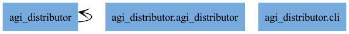
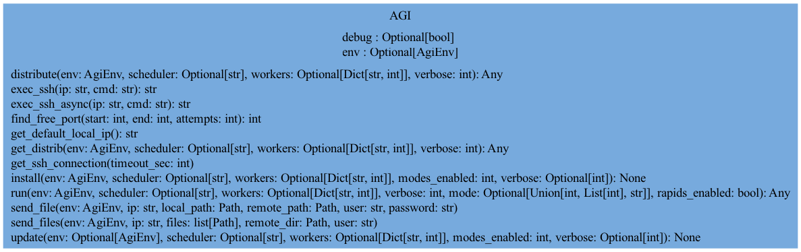

agi_distributor API
Usage Example
Installation
Update
Distribute
import asyncio
from agi_distributor import AGI
from agi_env import AgiEnv
async def main():
env = AgiEnv(install_type=1)
res = await AGI.distribute('flight', env, verbose=True,
scheduler=None, workers=None, data_source="file", path="/home/jpm/data/flight", files="*", nfile=1, nskip=0, nread=0, sampling_rate=1.0, datemin="2020-01-01", datemax="2021-01-01", output_format="parquet")
print(res)
return res
if __name__ == '__main__':
asyncio.run(main())
Run
import asyncio
from agi_distributor import AGI
from agi_env import AgiEnv
async def main():
env = AgiEnv(install_type=1)
res = await AGI.run('flight', env, mode=0,
scheduler=None, workers=None,
verbose=True, data_source="file", path="/home/jpm/data/flight", files="*", nfile=1, nskip=0, nread=0, sampling_rate=1.0, datemin="2020-01-01", datemax="2021-01-01", output_format="parquet")
print(res)
return res
if __name__ == '__main__':
asyncio.run(main())
Reference
{kind=link}

{kind=link}
- class agi_distributor.agi_distributor.AGI(target, verbose=1)[source]
Bases:
objectAgi Class.
Agi (Speedy-Python-Dask) is a scalable core based on Cython, Dask, and a pool of processes that supports High-Performance Computing (HPC) with or without out¬put data. It offers a command-line interface in Python and an optional LAB with Streamlit, featuring advanced capabilities like embedded ChatGPT and visualizations.
Agi stands for Speedy-Python-Dask.
- To run on a cluster:
Create a Agi account on each host with SSH access.
Copy your project’s pyproject.toml to each host.
Run uv sync before using AGI.
To run with output data, provide a shared directory accessible from all hosts. Use this directory in your Python target code as both input and output.
- Remarks:
Interactive Matplotlib graphics are not supported by Jupyter Lab. Use Jupyter Notebook instead.
While debugging in a Jupyter cell, it’s better to comment out #%%time to allow line numbers to display correctly.
- CYTHON_MODE = 2
- DASK_MODE = 4
- DASK_RESET = 59
- DEPLOYEMENT_MASK = 48
- INSTALL_MASK = 48
- INSTALL_MODE = 16
- PYTHON_MODE = 1
- RAPIDS_MODE = 16
- RAPIDS_RESET = 55
- RAPIDS_SET = 63
- RUN_MASK = 15
- SIMULATE_MODE = 48
- TIMEOUT = 10
- UPDATE_MODE = 32
- __init__(target, verbose=1)[source]
Initialize a Agi object with a target and verbosity level.
- Parameters:
target (str) – The target for the env object.
verbose (int) – Verbosity level (0-3).
- Returns:
None
- Raises:
None –
-
best_mode:
Dict[str,Any] = {}
- async static close_all_connections()[source]
Ferme proprement toutes les connexions SSH ouvertes. À appeler à la fin de ton programme ou avant arrêt.
-
debug:
Optional[bool] = None
- async static distribute(app, env, scheduler=None, workers=None, verbose=0, **args)[source]
check the distribution with a dry run :param package: :type package: any Agi target apps or project created by AGILAB :param list_ip: :type list_ip: any ip V4 with ssh access and python (upto you to link it to python3) with psutil and uv synced :param verbose: :type verbose: verbosity [0-3] :param Returns: :param the distribution tree: :param ——-:
- Return type:
Any
- async static exec_ssh_async(ip, cmd)[source]
Execute a remote command via SSH and return the last line of its stdout output.
- Return type:
str
- static get_default_local_ip()[source]
Get the default local IP address of the machine.
- Return type:
str- Returns:
The default local IP address.
- Return type:
str
- Raises:
Exception – If unable to determine the local IP address.
- async static install(module_name, env, scheduler=None, workers=None, modes_enabled=15, verbose=None, **args)[source]
Update the cluster’s virtual environment.
- Return type:
None- Parameters:
module_name_or_path (str) – The name of the module to install or the path to the module.
list_ip (List[str], optional) – A list of IPv4 addresses with SSH access. Each IP should have Python, psutil, and pdm installed. Defaults to None.
modes_enabled (int, optional) – Bitmask indicating enabled modes. Defaults to 0b0111.
verbose (int, optional) – Verbosity level (0-3). Higher numbers increase the verbosity of the output. Defaults to 1.
**args – Additional keyword arguments.
- Returns:
True if the installation was successful, False otherwise.
- Return type:
bool
- Raises:
ValueError – If module_name_or_path is invalid.
ConnectionError –
- async static run(target, env, scheduler=None, workers=None, verbose=0, mode=None, rapids_enabled=False, **args)[source]
Compiles the target module in Cython and runs it on the cluster.
- Return type:
Any- Parameters:
target (str) – The target Python module to run.
scheduler (str, optional) – IP and port address of the Dask scheduler. Defaults to ‘127.0.0.1:8786’.
workers (dict, optional) – Dictionary of worker IPs and their counts. Defaults to workers_default.
verbose (int, optional) – Verbosity level. Defaults to 0.
mode (int or list, optional) –
Mode(s) for execution. Defaults to None. - Bitmask 0b—- (4 bits) where each bit enables/disables specific features:
1—: Rapids
-1–: Dask
–1-: Cython
—1: Pool
mode can also be a list of modes to chain for the run.
rapids_enabled (bool, optional) – Flag to enable RAPIDS. Defaults to False.
**args (Any) – Additional keyword arguments.
- Returns:
Result of the execution.
- Return type:
Any
- Raises:
ValueError – If mode is invalid.
RuntimeError – If the target module fails to load.
- async static update(module_name, scheduler=None, workers=None, env=None, modes_enabled=15, verbose=None, **args)[source]
install cluster virtual environment :param package: :type package: any Agi target apps or project created with AGILAB :param list_ip: :type list_ip: any ip V4 with ssh access and python (upto you to link it to python3) with psutil and uv synced :param mode_enabled: :type mode_enabled: this is typically a mode mask to know for example if cython or rapids are required :param force_update: :type force_update: make a Spud.update before the installation, default is True :param verbose: :type verbose: verbosity [0-3] :param : :type : rtype:
None
-
workers:
Optional[Dict[str,int]] = None
-
workers_tree:
Optional[Any] = None
-
workers_tree_info:
Optional[Any] = None